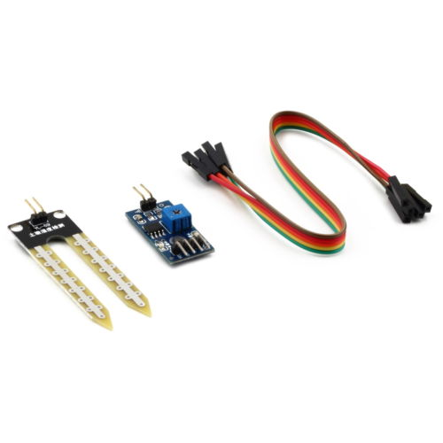

Soil moisture sensors measure the water content in soil. A soil moisture probe is made up of multiple soil moisture sensors. One common type of soil moisture sensors in commercial use is a frequency domain sensor such as a capacitance sensor. Another sensor, the neutron moisture gauge, utilize the moderator properties of water for neutrons. Cheaper sensors - often for home use - are based on two electrodes measuring the resistance of the soil. Sometimes this simply consists of two bare (galvanized) wires, but there are also probes with wires embedded in gypsum. Time domain transmission (TDT) and time domain reflectometry (TDR) is also used to measure moisture content; water has a high dielectric constant; a higher water concentration causes a higher average dielectric constant for the soil. The average dielectric constant can be sensed by measuring the speed of propagation along a buried transmission line.
